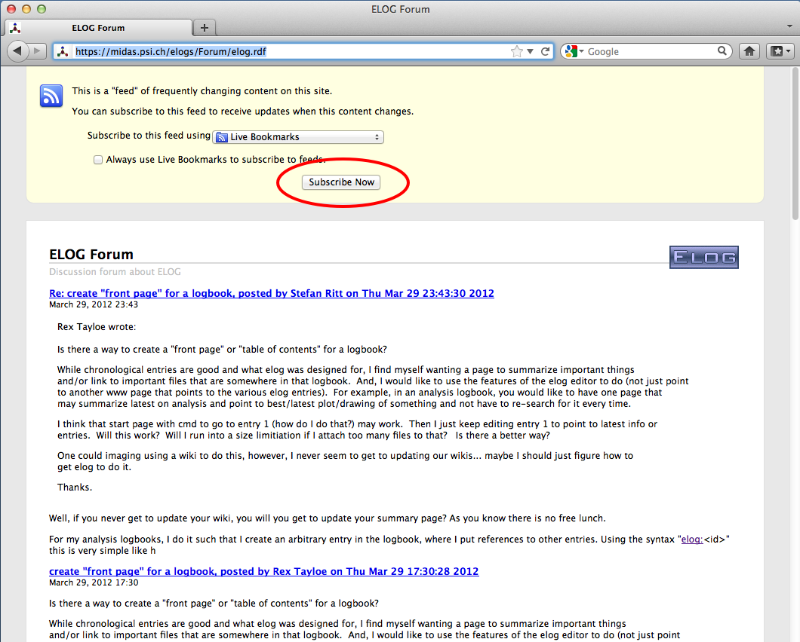
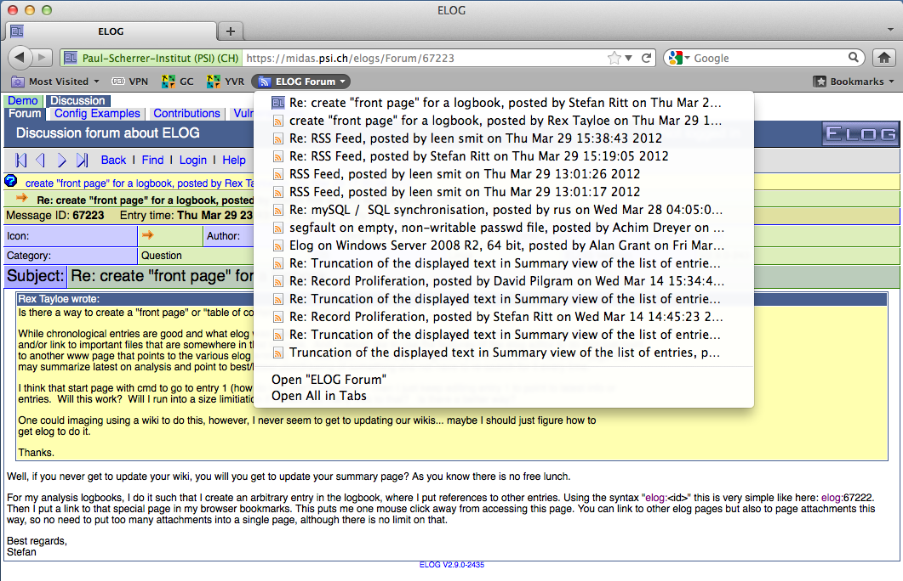

ELOG is part of a family of applications known as weblogs. Their general purpose is :
ELOG is a remarkable implementation of a weblog in at least two respects :
This is actually a problem when writing a User's Guide, because ELOG servers, and individual weblogs on one server, can vary wildly in appearance and functionality... This guide only attempts to cover the main concepts of importance for ELOG users, describing the default "out-of-the-box" setup and how that behaviour may have been modified by the server administrator.
Just to be clear, some definitions of terms that will be used throughout the guide :
To access a logbook, point your Web browser at the appropriate URL. The default for a local Elog is http://localhost:8080/logbookname. Logbook files are stored in directory logbookname which is a sub-directory of the logbook root directory, defined by the administrator. See the administrator guide on how to create a new logbook.
If several logbooks are defined on the server, the entry page may be a list of all logbooks, with their descriptions, number of entries, and links to enter the logbook you want to use.
Alternatively, you may be taken directly to a specific logbook. By default you will see a list of entries, but the administrator may have defined a different "default view" for the logbook, like the list of the day's entries, or directly display the last entry, etc. (depending on what is most convenient for that logbook's purpose).
Each entry in a logbook is identified by an unique ID, which is last part of the URL when that message is displayed. This ID might be used to create a bookmark in a browser pointing directly to a specific entry.
There are four ways through which access to a logbook may be controlled: it may be open for all to read ; it may require a common "read" password for all users ; it may require each user to have an individual user account (login name) and password ; finally, access may be granted or not depending on the address of the workstation you are using.
There are two main viewing modes in a logbook :
Logged in as <username>" reminder in between.
At the bottom of every page is a common "footer" for the logbook. By default this is just a link to the ELOG home page in Switzerland, but may be customized locally (typically to provide a navigation bar and links for integration with other Web sites).
All these lists have a number to the left of each listed entry, that is a link to the corresponding entry view.
There are several interesting ways to peruse the information in a logbook :
If you have "write access" to a logbook (by one of the same four methods as for read access), then you may use the "New", "Edit", "Reply" and "Delete" commands.
For the quality of the information committed to the logbook, you need understand and use these as well as possible. Here are some of the important features for each commmand :
<delete>" in the field below its name.
This is not normally a problem for the sort of short, text-mode entries ELOG is designed to support. However, if a user starts to upload or download a large attachment file (or image) over a slow link, all other users on that ELOG server will have to wait for that transfert to finish before they can access any logbook on that server. This is why there is a low limit on the size of attachments, and why ELOG should not be used to distribute large files under intensive multi-user conditions.
http://your.host/your_logbook/?cmd=New&pauthor=joe&ptype=Info...a new entry is created, with the "author" field pre-populated with "joe" and the "Info" value preselected for the "type" field. The same is possible for any attribute defined in the logbook (note the leading "p"). Thus you can define a set of bookmarks for various types of logbook entries.
elog can be used. The parameters
are:
elog -h <hostname> [-p port] [-d subdir]
Location where elogd is running
-l logbook Name of logbook
-s Use SSL for communication
[-v] For verbose output
[-w password] Write password defined on server
[-u username password] User name and password
[-f <attachment>] Up to 50 attachments
-a <attribute>=<value> Up to 50 attributes
[-r <id>] Reply to existing message
[-q] Quote original text on reply
[-e <id>] Edit existing message
[-x] Suppress email notification
[-n 0|1|2] Encoding: 0:ELcode,1:plain,2:HTML
-m <textfile>] | <text>
"cat text | elog -h ... -l ... -a ..."or in a file with the -m flag. Multiple attributes and attachments can be supplied. If attributes with multiple possible values are defined in a logbook (via the "MOptions" keyword), they can be separated with a "|", like
-a "<attribute>=<value1> | <value2>".
The message text can be supplied directly at the command line or submitted
from a file with the -m flag.
elog program makes it possible to submit logbook
entries automatically by the system or from scripts. In some shift logbooks
this feature is used to enter alarm messages automatically into the logbook.
RSS (RDF Site Summrary or Really Simple Syntication) is a web feed format to publish frequently new or updated ELOG entries. This is a bit like the email notifications present in ELOG, but the RSS system does not go through an email reader, but through a dedicated RSS reader. This helps to seperate ELOG updates form other email or spam. An RSS "channel" can be subscribed to, so one gets notified whenever a new or updated entry exists. One can either use a dedicated RSS reader or aggregator, or use the RSS functionality of a web browser, such as Firefox or Google Reader.
To obtain the RSS feed, one simply has to request the file elog.rdf from a logbook. For the ELOG forum, one can enter the URL
https://midas.psi.ch/elogs/Forum/elog.rdf
The browser then offers the possiblity to subscribe to that logbook:

In case of "Live Bookmarks" in Firefox, new logbook entries automatically appear in the bookmark list:
>Standalone RSS reader can also notify the user of new entries with dialog boxes and sounds. For a list of availabel RSS aggregators, see here.